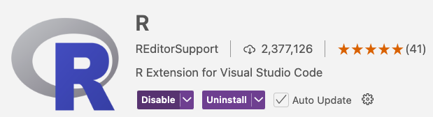
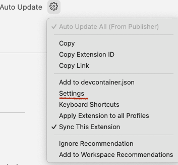
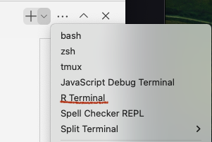

VS Code is customizable for software development in multiple languages. Here's a note about how to start using it for the R language.
Assume you have a current working R version in the terminal, and
> .libPaths()
returns a valid path:
[1] "/Library/Frameworks/R.framework/Versions/4.4-arm64/Resources/library"
On the Mac, VS Code finds the R executable and library paths automatically. You can check this by opening a shell (e.g. zsh, or bash) in VS Code and invoking R.
R add the languageserver package> install.packages("languageserver")
This package exposes an API for common text editors, not specific to VS Code

Configuring the Extension is done by the dropdown on the "gear" icon. However the default settings typically work fine.

Now when you do a "new file" you'll have choice of both an .R file and .rmd file option. R files include "intellisense" popup suggestions for command completion in addition to other smart editor features. For now try the .R file feature; .rmd files need additional extensions enabled. The R Extension also adds an "R terminal" to the list of choices in the lower right terminal dropdown:

but you don't need to create an active R terminal to execute R code, as shown here:
The R Extension enables cmd-return (Mac) to send the current line or file selection to the R process running in the current terminal window, or creates a process to run it if none exists. Of course you can interact directly with the R process at the prompt in the window. This does not require you to load the languageserver library in the R process.
An alternate command is the Run code (cntrl-option-n) in the file's right-click context menu, to run the current file via Rscript. Be sure to save the file first.
Since there can be several active R processes, the current process PID is shown on the right in the Status bar. Either method to run code will create a graphics pane if necessary, which can be saved as a png file.
Other actions are analogous to those familiar in RStudio, but the interface is adapted to VS Code:
In the far left sidebar, the icon brings up the "Workspace" with a browsable list of global R objects like the Rstudio Environment, and a menu of help page widgets. Similarly a file's right-click context menu "Open help for selection" will bring up the documentation file for an R object.
So you see that editor support provided by the R Extension for VS Code covers most basic features of a useful R GUI. Other features, such as running R markup notebooks, symbolic debugging, or connecting to a browser require loading other VS Code extensions.